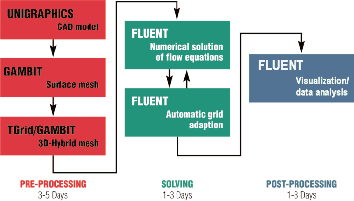

Ahmet Açýkgöz, Mustafa Ö. Geliþli, Emre Öztürk
Ekim 2006, Ýstanbul ANOVA Mühendislik www.anova.com.tr
Not: Bu çalýþma, Eylül 2008'de TurkCADCAM.net portalýndan yayýna baþlamýþtýr.
1 - Giriþ
Bir çok endüstri dalýnda bir ürünün performansýnýn daha ürün tasarým sürecindeyken bilinmesi oldukça önemlidir. Böylece ürünün artan performans isteklerini karþýlayýp karþýlamadýðý daha tasarým aþamasýnda görülebilir, probleme sebep olan etkenler bu aþamada ortadan kaldýrýlabilir ve optimize edilmiþ ürün piyasaya sürülerek ürünün rekabet gücünü ve müþteri memnuniyetini artýrma imkanýna sahip olunabilir.
Otomotiv endüstrisi de diðer endüstri dallarý gibi bir çok konuda geçmiþe nazaran çok daha talepkar performans istekleri ve tasarým hedefleriyle karþý karþýya kalmaktadýr. Bu alanlardan bazýlarý
. Sanal tasarým yöntemleriyle tasarým süresinin kýsaltýlmasý,
. Klasik içten yanmalý motorlarda silindir içindeki akýþýn ve yanmanýn anlaþýlarak yakýt tüketiminin düþürülmesi,
. Kaput altý sýcaklýk daðýlýmýnýn detaylý bir þekilde incelenerek arzu edilen þekle getirilmesi,
. Ýyi bir aerodinamik karakteristiðe sahip yeni ve alýmlý tasarýmlar yapýlmasý,
. Daha düþük sürükleme katsayýlarýna eriþirken düþük bileþen sýcaklýklarýnýn, kabin görüþ açýklýðýnýn ve buna benzer kritik diðer özelliklerin korunmasý,
. Akýþ kaynaklý gürültünün azaltýlmasý, iç iklimlendirme sistemlerinin optimizasyonu ve solar etkilerin kontrolü vasýtasýyla sürüþ konforunun artýrýlmasý,
. Çevre dostu ve kompakt araçlar tasarlamak,
. Klasik içten yanmalý motorlara yakýt pili gibi alternatifler geliþtirmek,
olarak belirtilebilir. Firmalar ve mühendisler bu amaçla deðiþik araçlarýn yardýmýna baþvurmuþ ve bu araçlarý hem tasarým sürecini kýsaltmak hem de problemin fiziðini daha iyi anlamak amacýyla kullanmýþlardýr. Akýþ ve ýsý transferi problemlerinin sanal ortamda çözülmesine olanak saðlayan Hesaplamalý Akýþkanlar Dinamiði (HAD) yöntemleri bu araçlarýn baþýnda gelmektedir.
Hesaplamalý Akýþkanlar Dinamiði (HAD) / Computational Fluid Dynamics (CFD) ve diðer CAD/CAM tasarým teknikleri 1980'li yýllarda doðdu ve hýzlý bir þekilde otomotiv firmalarý tarafýnda kullanýlmaya baþlandý. Bahsedilen zaman dilimindeki yavaþ bilgisayarlar, gerçeði tam olarak yansýtamayan geometriler ve fiziksel altyapýsý yetersiz kodlar, otomotiv sektöründe HAD yöntemlerinin kullaným alanýný nispeten kýsýtlý tutarken günümüzde bu durumun tamamen deðiþtiði rahatlýkla söylenebilir.
Günümüzde dünya çapýndaki bir çok otomotiv firmasýnda ve bu firmalarýn yan sanayinde HAD yöntemleri tasarým sürecinin bütünleþik bir parçasý olan bir tasarým aracý olarak kullanýlmaktadýr. Uzun yýllar boyunca yapýlan testler ve edinilen tecrübeler firmalarý HAD yöntemlerini daha aktif bir þekilde kullanýlarak tasarým sürecini kýsaltýlma, simülasyonlar vasýtasýyla herhangi bir ürünü tasarým aþamasýndayken optimize etme ve oldukça pahalý ve zaman alýcý olan deneylerin ve prototip üretme iþlemlerinin minimize etme yoluna yönlendirmiþ ve bunun sonucu olarak bir çok alanda akýþ modellenmesi ve ýsý transferi konusunda yapýlan çalýþmalarýn sayýsýnda büyük bir artýþ gözlenmiþtir. Ayrýca bilgisayar konusundaki geliþmeler ve yüksek performanslý donanýma düþük maliyetlerle sahip olma imkaný milyonlarca elemana sahip modellerle yapýlan analizleri günlük bir iþ haline getirmiþtir.
Makalede amacýmýz bu konuda yapýlan çalýþmalara bazý örnekler göstermek ve otomotiv sektöründe HAD yöntemlerinin ne þekilde ve hangi problemler için kullanýlabileceði konusunda bir miktar bilgi vermektir.
2 - Otomotiv sektöründeki HAD çalýþmalarý
Yukarýda da belirtildiði gibi HAD yöntemleri ile silindir içi akýþ problemlerinden araç dýþ aerodinamiði veya kaput altý ýsý transferine kadar çok çeþitli problemlere çözüm bulmak olasýdýr. Aþaðýda deðiþik problemlerin hepsi için FLUENT isimli Hesaplamalý Akýþkanlar Dinamiði (HAD) yazýlýmý kullanýlmýþtýr.
Dýþ aerodinamik ve aeroakustik:
Dýþ aerodinamik araç üreticileri için her zaman önemini korumuþtur. Sürükleme katsayýsýnýn düþürülmesi yakýt tüketimine ve aracýn performansýna doðrudan etki ederken akýþ kaynaklý gürültü seviyesinin azaltýlmasý da özellikle yüksek süratlerde sürüþ konforunu artýrmaktadýr. Bu nedenle bu konularda yapýlmýþ bir çok çalýþma bulunabilir. Þekil 1. de Opel firmasý tarafýndan Astra modeli için yapýlan bir akýþ analizinden alýnmýþ bir resmi görebilirsiniz.
Þekil 1. Opel Astra etrafýndaki yapýlmýþ akýþ analizi.
Araç üzerindeki statik basýnç daðýlýmý ve akým çizgileri görülebilir.
Bu tip bir analizle araç etrafýndaki ve/veya/altýndaki basýnç daðýlýmý, hýz daðýlýmý detaylý olarak hesaplanýp sürükleme katsayýsý gibi önemli deðerler yüksek bir hassasiyetle saptanabilir. Böylece gerekli optimizasyonlar sanal ortamda rahatlýkla yapýlabilir. Bu tip analizlerde izlenen yöntemi ise Þekil 2 de görebilirsiniz. Burada Opel firmasýnýn böyle bir analiz için ne tip iþlemler yaptýðý ve ne kadar süre harcadýðý görülebilir.

Þekil 2. Opel Astra analizi için yapýlan iþlemler ve süreleri.